1. Organization Overview
SAAFAI AI-Based Sanitation Monitoring System is implemented at Nagpur Railway Station (KP), Nagpur Railway Stationto transform conventional sanitation monitoring into an AI-enabled, data-driven operations system.
Nagpur Railway Station (KP)
May 20 - Jul 08, 2025
(Last 7 Weeks)
Organization Metrics
Washroom Performance Summary (AI Hygiene Score)
Active Washroom Directory
| Washroom Location | Zone | AI Hygiene Score (/10) | Performance Status |
|---|
of the identified washrooms at the station.
Under AI Monitoring
2. Digital Monitoring System & AI Methodology
The objective of Safai AI is to transform washroom management from a reactive, manually monitored process into a proactive, AI-driven digital monitoring system. SAAFAI replaces the legacy paper register process with a completely digital workflow where every cleaning activity is recorded, verified, analyzed, and converted into actionable insights.
The Digital Workflow
5-Tier AI Ensemble
Rather than relying on one image, SAAFAI combines outputs from several specialized models:
-
Visual Cleanliness (96% Acc): Detects floor stains, water marks, and dirty surfaces. (Weight: 30%)
-
Safety Detection (95% Acc): Identifies wet floors, puddles, and slip hazards. (Weight: 15%)
-
Garbage Detection (97% Acc): Flags overflowing bins and waste accumulation.
-
Broken Fixtures (94% Acc): Analyzes structural damage to doors, mirrors, and taps.
-
Consumables (98% Acc): Validates availability of soap and tissue paper. (Weight: 15%)
3. Physical Infrastructure Condition Assessment
In addition to evaluating cleanliness standards and operational sanitation practices, a comprehensive assessment of the physical washroom infrastructure was undertaken as part of the baseline survey. The objective of this exercise was to identify structural, plumbing, and asset-related deficiencies that may adversely impact passenger experience, safety, accessibility, and overall facility functionality.
The assessment focused on the condition of floor and wall finishes, sanitary fixtures, plumbing systems, drainage arrangements, partitions, utility fittings, and other passenger-facing assets. While such observations are independent of routine cleaning performance, they play a critical role in determining the perceived quality and usability of public sanitation facilities.
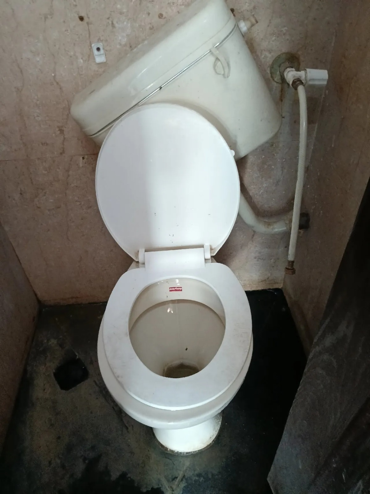
Observation 01
Wall-Mounted Urinal Unit & Plumbing Connection Damage
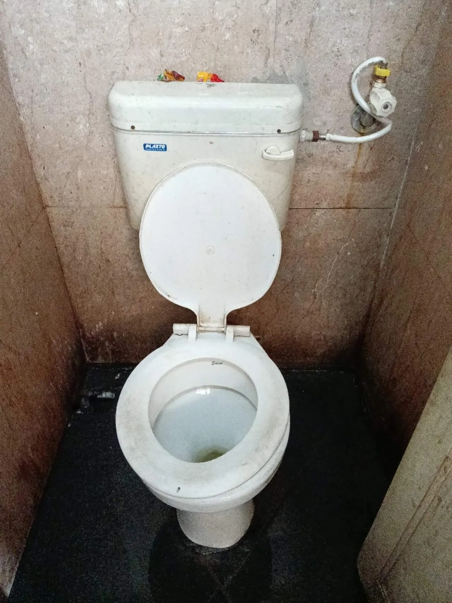
Observation 02
Western Commode Toilet Bowl & Seat Condition
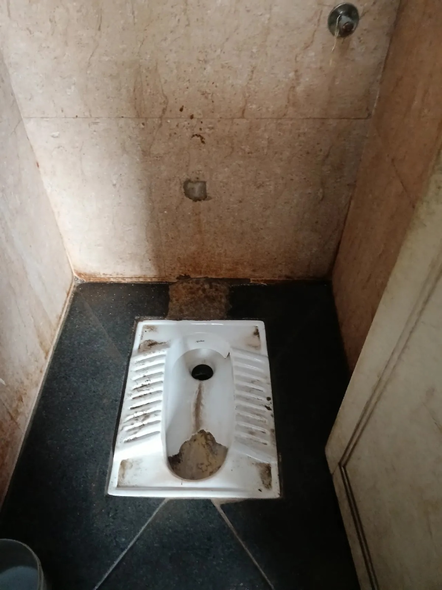
Observation 03
Squatting Pan Platform & Surround Drain Finishing
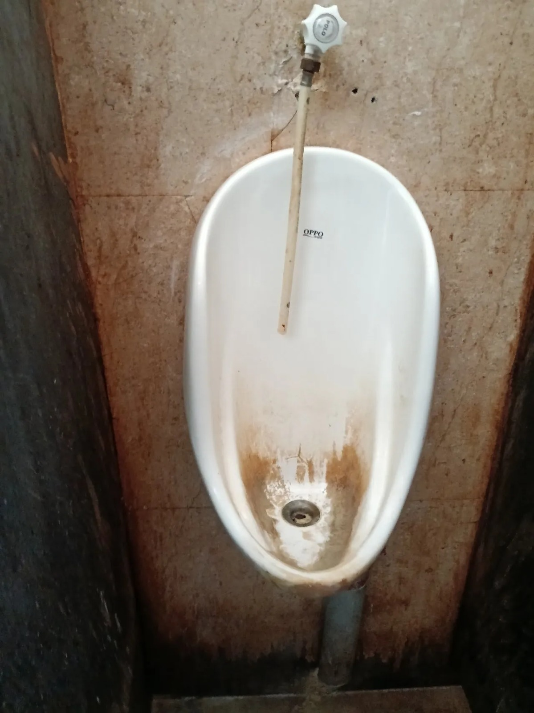
Observation 04
Overhead Plumbing & Seepage Marks
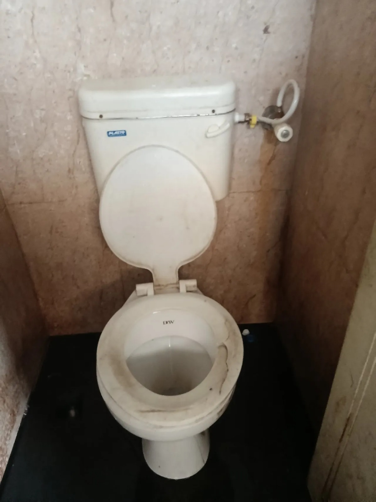
Observation 05
Partition Wall & Sanitary Drainage Trap
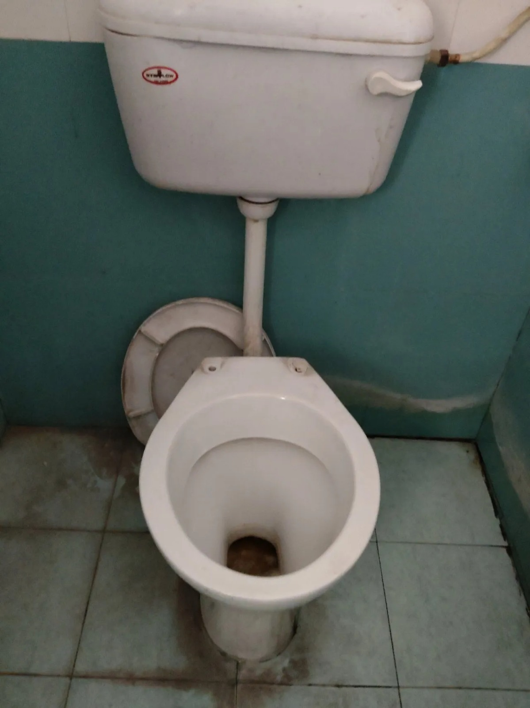
Observation 06
Civil Wall Finishing & Surface Maintenance
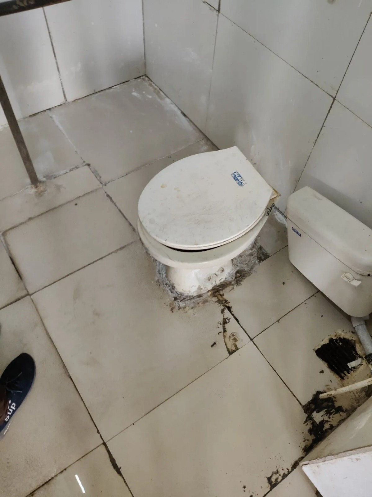
Observation 07
Corroded Flush Line & Sanitary Plumbing Fixtures
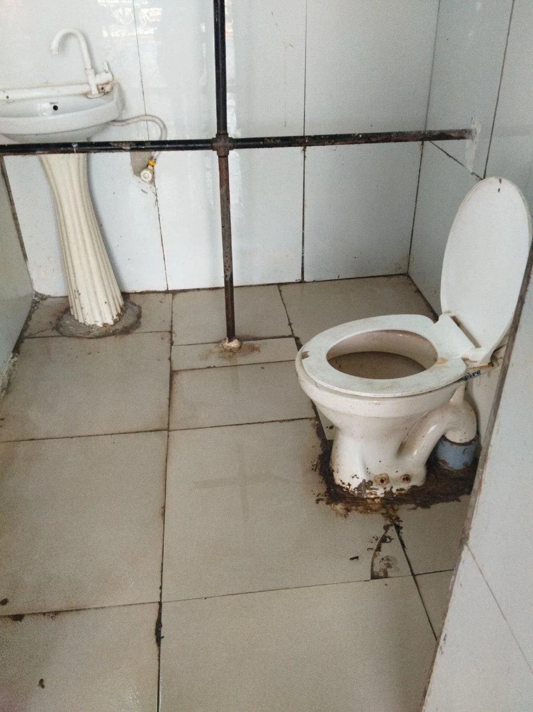
Observation 08
Surface Wall Tile Corrosion & Plumbing Interface
Consolidated Assessment Summary
The physical infrastructure audit revealed instances of asset deterioration, plumbing-related deficiencies, surface damage, and general wear-and-tear across selected washroom facilities. Although these observations are not directly linked to cleaning performance, they significantly influence passenger perception, accessibility, safety, and the overall quality of sanitation services. The photographic evidence serves as a baseline reference for future maintenance planning and infrastructure upgrades.
4. Overall Performance
Washroom Rankings
60-Day Avg. AI ScoreAll washrooms ranked by overall AI hygiene score
15-Day Period Trend
Avg Score / PeriodPerformance trajectory across four 15-day reporting periods
Best Performing Cleaners
60-Day Period| Rank | Cleaner | Tasks | Score | Performance |
|---|---|---|---|---|
|
1
|
Priyanka Tiwari
Senior Staff
|
85 |
8.55
/10
|
|
|
2
|
Joti Madavi
Senior Staff
|
60 |
8.34
/10
|
|
|
3
|
Mangla Kavde
Regular Staff
|
65 |
6.31
/10
|
|
5. Advanced Analytics & Trend Heatmap
The Hygiene Performance Heatmap below maps the weekly AI compliance scores for each monitored washroom across a 7-week reporting cycle. Color intensity reflects score bands — from high-performing green zones to deteriorating red zones — instantly highlighting operational risk windows and sustained quality hubs.
| Washroom | Wk 1 | Wk 2 | Wk 3 | Wk 4 | Wk 5 | Wk 6 | Wk 7 | Avg |
|---|
Deep Data Insights
- Critical Collapse — Bombay Side Platform-1 End Washroom: This washroom maintained reasonable average scores (6.32–6.72) through Weeks 1–6 but suffered a severe quality collapse in Week 7. It plummeted to 4.25 (Wk 7), entering the Poor zone and requiring immediate corrective action.
- Consistent Excellence — Office Floor Washrooms: The Office Ground Floor Washroom 2 and Office Floor-1 Washroom 1 were the strongest performers across the available reporting weeks. Office Ground Floor 2 maintained scores between 8.60–8.83 (all Excellent). Controlled access and disciplined cleaner routines are the key differentiating factors.
- Volatile Performance — Handi Cap Platform-1: This washroom started at 5.53 (Wk 1), rapidly improved to 7.40 in Week 3, and then tapered down to 5.40 in Week 6, reflecting inconsistent daily standards and lack of sustained accountability.
- Massive Monitoring Gaps: A huge operational blindspot exists for multiple facilities. Virtually all Office Floor washrooms stopped reporting data after Week 4 or Week 5.
6. Individual Washroom Performance Metrics
The platform breaks down the macro-level station health into micro-level asset profiles. The graphs below reflect isolated daily tracking trends for specific washrooms, providing an empirical baseline for evaluating localized facility deterioration.
Deep Data Insights
-
↓
Critical Decline — Bombay Side Platform-1 End Washroom: This high-traffic platform washroom showed sharp deterioration. It dropped from 6.71 (Day 16–30) to 4.15 (Day 46–60). The washroom entered the Poor zone and demands urgent scheduling reviews and increased cleaning frequency.
-
★
Top Performers — Office Ground Floor Washroom 2: This washroom delivered the strongest performance, posting scores of 8.85 (Day 1–15) and 8.74 (Day 16–30) — among the highest averages of any washroom in the entire period. It consistently maintained the Excellent band, confirming reliable operational standards.
-
~
Fluctuating Standards — Handi Cap Platform-1: This washroom experienced heavy variance, improving from 5.87 (Day 1-15) to a peak of 7.23 (Day 16–30), before crashing downward to 5.40 (Day 31–45). The sharp inconsistency suggests that cleaning standards need strict reinforcement to maintain hygiene over long periods.
-
!
Severe Monitoring Gaps — Office Washrooms: Multiple locations exhibit severe data blackouts. Virtually all Office Floor washrooms abruptly stopped recording data for the latter half of the reporting period (Days 31-60), demanding an urgent compliance audit.
Cleaner Performance & Accountability Analysis
Performance Quadrant: Productivity vs AI Quality Score
This quadrant evaluates cleaner accountability by mapping task productivity against AI-assessed hygiene
quality.
Top-right quadrant represents the ideal performance zone.
needs productivity boost
Top Performers
attention & training
quality improvement
Productivity is measured based on total tasks completed in the selected period.
8. Visual Before and After Impact
This section provides a visual comparison of washroom conditions before and after deployment of the SAAFAI AI-Based Sanitation Monitoring System. The photographic evidence helps demonstrate the effectiveness of continuous monitoring, cleaner accountability, digital audits, and real-time maintenance interventions.
The baseline images represent the conditions observed during the pre-pilot assessment survey, while the corresponding post-deployment images document measurable improvements in cleanliness, stain reduction, fixture maintenance, floor condition, and overall hygiene standards.
Western WC Toilet Unit
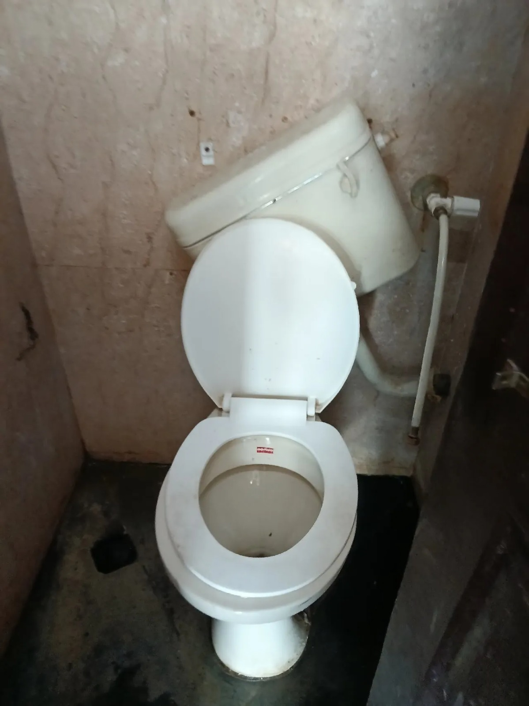
Platform WC Toilet Compartment
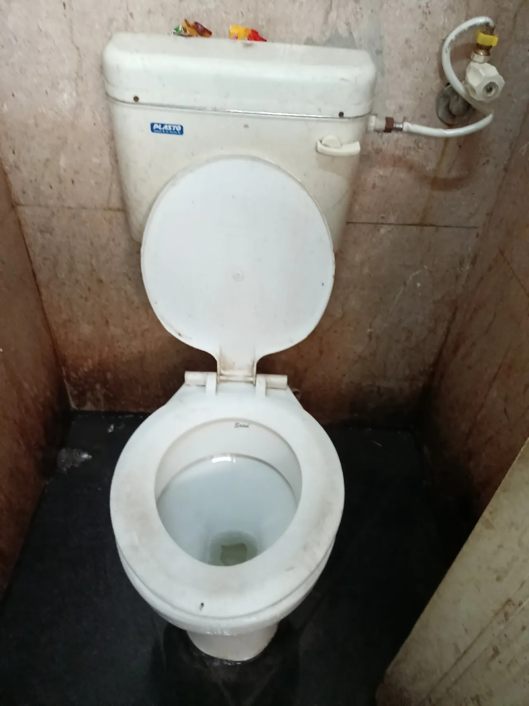
Squatting Pan Platform Area
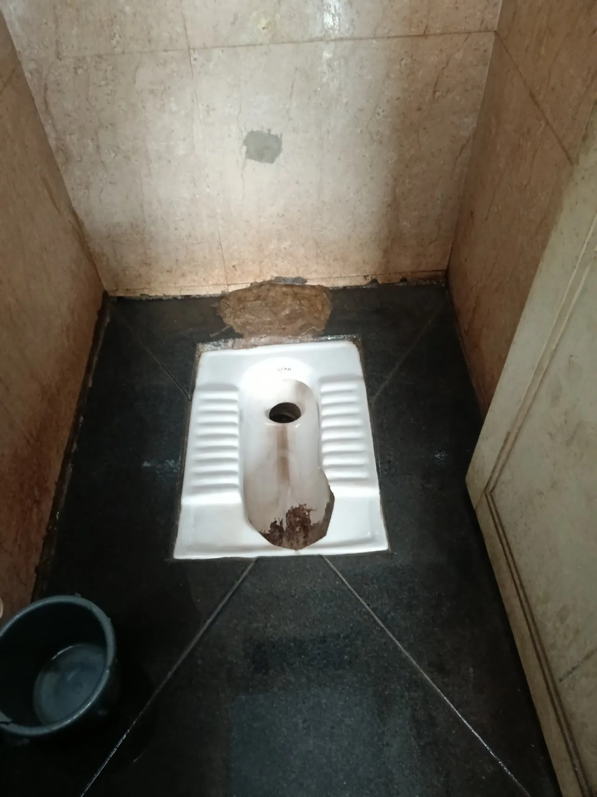
Urinal Drain & Plumbing Line
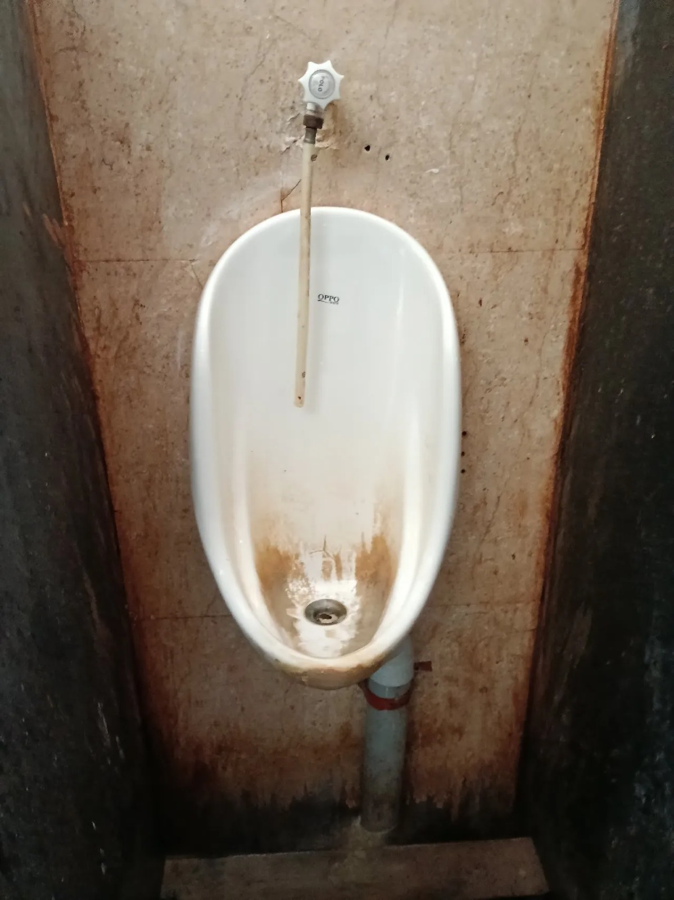
9. Operational Business Impact
Integrating the SAAFAI intelligence platform transitions the facility management strategy from a highly fallible, reactive stance to a precision, data-driven methodology. The ROI metrics below highlight the direct structural benefits to railway administration.
| Operational Metric | Before SAAFAI (Legacy) | After SAAFAI (Platform) | Measured Improvement |
|---|---|---|---|
| Manual Register | Paper log books (Prone to falsification) | 100% Digital Workflows | Data Integrity Assured |
| Cleaning Verification | Manual Inspection (Subjective) | AI-Verified Vision Analysis | Immutable Audit Trail |
| Monitoring Cadence | Periodic Spot Checks | Real-Time Telemetry | Continuous Operations Oversight |
| Labor Accountability | Limited to Group Level | Individual Granular Tracking | Complete Staff Mapping |
| Enterprise Visibility | Low, Fragmented Data Silos | Centralized Live Dashboard | Instant KPI Generation |